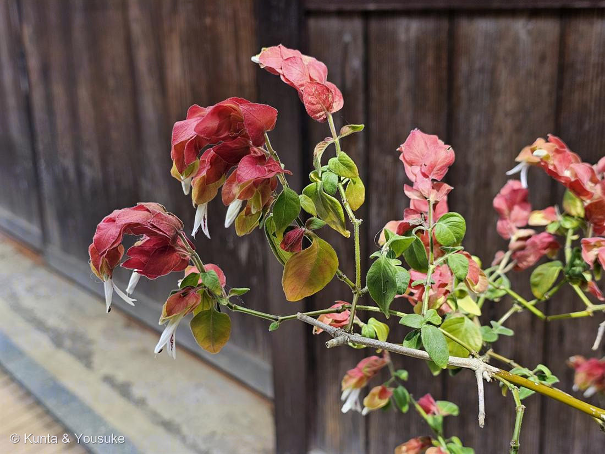

地図を読み込んでいるよ…
🔍 写真も地図も、押しているあいだ拡大して見られるよ（スマホは指を置いてすこし待ってね）。
🌍 の地図＝この子がもともと自生している場所を緑に。メキシコ（中央アメリカ）。
⚠出典は「メキシコ（中央アメリカ）」。確かなのはメキシコなので、そこだけ塗った。⭐送粉者のハチドリがいるのも、この地図の中だけ。日本には来てくれない。
⚠ 地図は国（日本と中国だけ県・省）までしか塗れないから、ほんとうの分布より広く見えていることがあるよ。地図はだいたいの場所。正確なところは、上の文を見てね。
コエビソウ（小海老草）
Justicia brandegeeana Wassh. & L.B.Sm.
別名 · ベロペロネ（旧属名 Beloperone guttata）／英名 shrimp plant（エビの草）
キツネノマゴ科 · Acanthaceae（キツネノマゴ属）
燻太さんの気づき「花びらかと思ったら、これは葉っぱかな」……大正解。赤いのは苞＝葉が変形したもの
名前と学名の由来
- Justicia（ユスティキア）＝18世紀スコットランドの園芸家ジェームズ・ジャスティス（James Justice, 1698–1763）にちなむ。No.003・No.027・No.028に続く人名をもらった属名。
- brandegeeana＝アメリカの植物学者ブランデギー（T. S. Brandegee）にちなむ。
- 旧属名 Beloperone（ベロペロネ）＝ギリシャ語 belos（矢）＋perone（留め金）＝葯のかたちから。園芸店で「ベロペロネ」と呼ばれるのは、この古い名前の名残。
- 旧種小名 guttata（グッタータ）＝ラテン語で「斑点のある」。→ まさに白い花の下くちびるの、あずき色の斑点のこと。名前になるくらい、そこが目印。
- 和名小海老草／英名shrimp plant（エビの草）＝重なった苞がエビの尾そっくりだから。日本と英語圏で、べつべつに見て、同じものを思いついた珍しい一致。
この植物のこと
- キツネノマゴ科の常緑低木。メキシコ原産。園芸植物として日本に渡来し、鉢植えや庭植えでよく見かける。
- 原産地の送粉者はハチドリ。赤い苞＝遠くから見える看板、細い筒状の花＝くちばしの長い鳥に合わせた形。日本にはハチドリがいないので、この子は日本ではほとんど実をつけない。
- 半耐寒性で霜に弱く、0℃前後が限界。この株が板塀ぎわでこんなに茂っているのは、そこが冬に凍りにくい場所だからかもしれない。
- 暖かければほぼ一年じゅう咲く。切り戻すとよく枝分かれして、苞の穂が増える。
赤いのは、花びらじゃない ── 苞（ほう）
- 苞（bract）＝花や花序のつけ根につく、葉に由来する器官。この子では苞が瓦のように重なって、鱗みたいな穂をつくる。
- 本当の花＝苞のすきまから顔を出す、白い唇形花（2つのくちびる）の細い筒。下くちびるに、あずき色の斑点がある。写真でもちゃんと見える。
- 花はすぐしぼむのに、苞は数か月ももつ。だから「ずっと咲いている」ように見える。花は一瞬、看板は長持ち。
- 写真をよく見ると、苞に色のグラデーションがある。先端の若い苞は黄緑〜サーモンピンク、根元の古い苞は濃い赤。時間が、色になっている。
「花びらに見えて、じつは花びらじゃない」── 図鑑の連作
- No.003 スイレンボク：ピンクの星は、花弁5枚＋萼5枚がどちらも色づいたもの（花弁化した萼）。
- No.014 ニゲラ：青い「花びら」は、じつは萼。
- No.025 ドクダミ：白い4枚の「花びら」は、じつは総苞。
- No.029 コエビソウ（この子）：赤い「花びら」は、じつは苞。これで4人目。
- ポインセチア（トウダイグサ科）もブーゲンビリア（オシロイバナ科）も、色づくのは苞。科がばらばらなのに、同じ答えにたどりついている＝収れん。No.024 シモツケ（花序の形）・No.027 ニオイバンマツリ（花色の変化）に続く、図鑑で3例目。